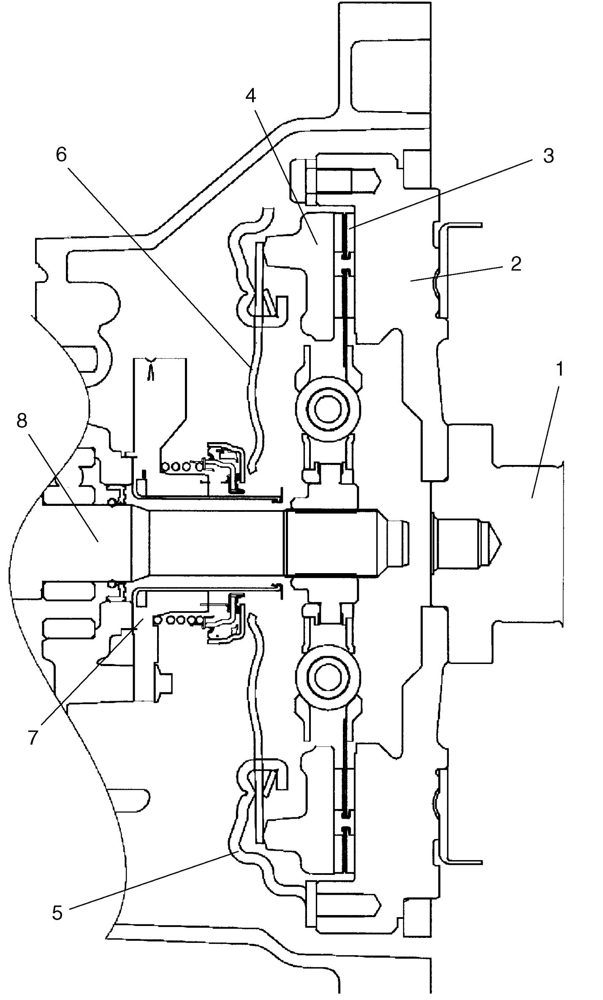

5C
| Clutch Construction |
The clutch is a diaphragm spring clutch of a dry single disc type. The diaphragm spring is of a tapering-finger type, which is a solid ring in the outer diameter part, with a series of tapered fingers pointing inward.
The disc, carrying four torsional coil springs, is positioned on the transaxle input shaft with an involute spline fit.
The clutch cover is secured to the flywheel, and carries diaphragm spring in such a way that the peripheral edge part of the spring pushes on the pressure plate against flywheel with the disc in between when the clutch release bearing incorporated in clutch operating cylinder is held back. This is the engaged condition of the clutch.
Depressing the clutch pedal causes the release bearing incorporated in clutch operating cylinder to advance and pushes on the tips of the tapered fingers of the diaphragm spring. When this happens, diaphragm spring pulls the pressure plate away from flywheel, thereby interrupting the flow of drive from flywheel through clutch disc to transaxle input shaft. Clutch fluid is supplied from brake fluid reservoir. Clutch fluid level can be checked by brake fluid level of brake fluid reservoir.

 "Expand image")
| 1. | Crankshaft | 5. | Clutch cover |
| 2. | Flywheel | 6. | Diaphragm spring |
| 3. | Clutch disc | 7. | Operating cylinder assembly |
| 4. | Pressure plate | 8. | Input shaft |